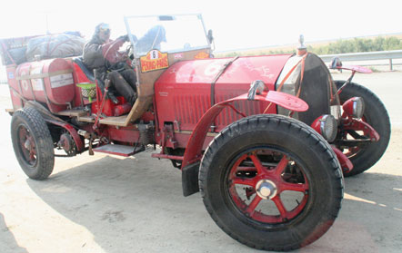
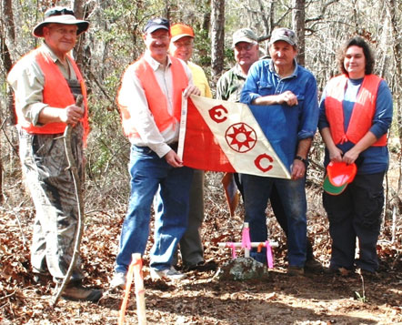
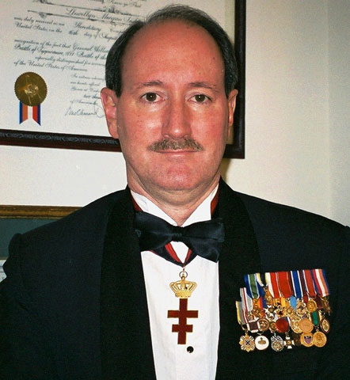
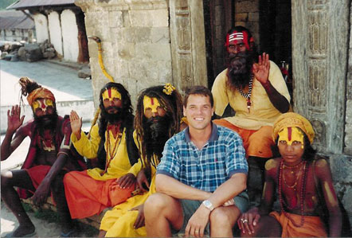

|
|
Recommended links:
Car Rallies ("Time/speed/distance" or "regularity" rallies)
Northeast Rally Club: runs classic car rallies in Delaware, New Jersey, New York and Pennsylvania. Almost all proceeds go to local charities. Lew is a member. www.northeastrallyclub.com
The ERA/HERO (Endurance Rally Association/Historic Endurance Rally Organization), the outstanding merged long distance rally outfit that organized the amazing 2000 Around the World in 80 Days classic car rally (which Lew covered in London) , the 2010 and 2013 Peking to Paris Motor Challenges, the 2012 TransAmerica rally, the famous annual Scottish Malts rally, the grueling Le Jog (Land ’ s End to John O ’ Groats) rally, the London to Lisb on 2026 rally, the Gaucho Trail 2026 South America rally, the Sahara 2027 Challenge, the Peking to Paris 2028, and numerous other very well prepared rallies.
See: www.hero-era.com
Bespoke Rallies Association, which has organized many impressive events and has many more on the calendar, including The Cuba Classic Rally 2024, The Grand Prix of South America 2026 (Buenos Aires to Cartagena), the Marrakech Express 2026 in Morocco, Himal aya Adventure 2027, and the Maya Classic 2027 (eight countries in Latin America). See https://bespokerallies.com/

A lovely Jaguar XKE in front of a Scottish castle, on one of Bespoke Rallies’ Highland touring events. The organization sponsors classic car tours and also regularities.
|
The Great Race: now re-organized, sets up 10-day rallies each year, with classic cars ranging up to 120 years old! Lew and Susan Toulmin competed in the 2005 Great Race when it was a 15-day coast-to-coast rally from the US Capitol in Washington, DC (the only motor event to ever start on the Capitol grounds) to Tacoma, Washington. Now each year the Great Race follows a different route, usually through small towns, covering about 2500 miles across half the continent. It is a time/speed/distance rally (a “ regularity ”) and cars do not break the open road speed limits. The 2026 route is from Springfield, Illinois to Pasa dena, California , following much of Route 66 , celebrating its 100th anniversary. See: https://www.greatrace.com/

Mammoth American La France at the Turkish�Greek border checkpoint on the Pekng to Paris 2010 rally.
|

Exploration and travel organizations
The Travelers� Century Club�a great club, for people who have traveled to 100+ countries or sovereign territories. Has regional chapters, and provides for "junior" or "aspirant" members who have been to 75+ countries. www.travelerscenturyclub.org
The Explorers Club—over 110 years old, the world’s premier organization for exploration and field science. The honorary head was Sir Edmund Hillary, conqueror of Everest, until his death in 2008. The Explorers Club Flag has been carried to both Poles, the deepest ocean trenches, the top of Everest, and to the Moon. Lew carried the Explorers Club Flag on his Washington Court House, Alabama expedition, General Williamson South Carolina search, Vanuatu “Bali Hai” and Female Chiefs expedition, two expeditions related to the infamous slave ship Clotilda, and various others. See www.explorers.org

Lew and team of volunteers and archaeologists carry the Explorers Club Flag while hunting for the grave of Judge Harry Toulmin, one of the founders of Alabama.
|
Heritage and lineage organizations
Daughters of the American Revolution. Has a fabulous library in downtown DC near the White House. Their library catalog is searchable on-line. www.dar.org
Hereditary Order of the Families of the Presidents and First Ladies of America: Organization for descendants or cousins of any US President or First Lady, or the President or First Lady of the CSA, Republic of Texas, Republic of California, or Republic of West Florida. www.presidentsandfirstladies.org
Hereditary Society Community: umbrella organization and website which lists all the active hereditary and lineage societies in the US, with links, pictures of their medals and insignia, and many other useful items. www.hereditary.us

Lew with his membership medals in Hereditary Society Community organizations.
|
Links to Some of the Most Traveled People on Earth
Charles Veley: has a website with lists of many of the world�s most traveled people and their �scores� on Veley�s list of countries and territories. On his own list, Veley is in the lead as �the most traveled man on Earth.� mtp.travel
Jeff Shea: a mountaineer who has conquered Everest and all seven of the world�s tallest mountains, with his own list of over 3000 provinces and states, based on the International Standards Organization list of countries and sub-units: www.jeffshea.org

Charles Veley, (sometimes) the Most Traveled Man, and his friends.
|
Travel gear
Red Oxx luggage: terrifically strong soft-sided luggage with no wheels to maximize space, and to keep you in shape during those long expedition hikes through the airports of the world: www.redoxx.com
L.L. Bean: classic travel clothes and gear. Great store in Maine and now opening stores around the US. www.llbean.com
Tilley Hats: most well traveled persons and "extreme" travelers eventually find and then swear by these great Canadian hats. www.tilley.com
TravelSmith: very versatile travel gear. www.travelsmith.com
|
|